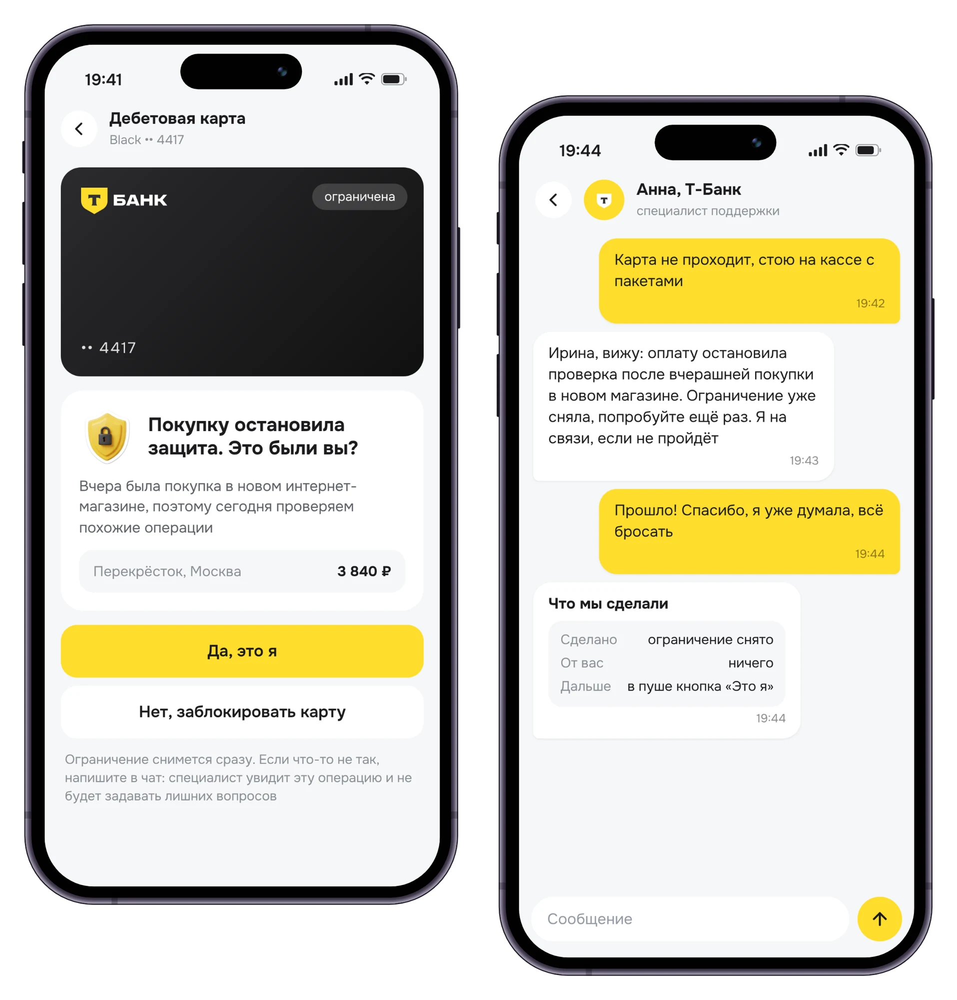
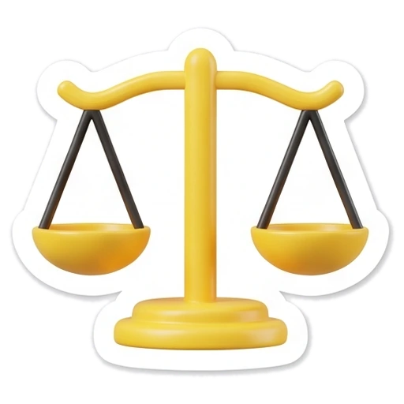
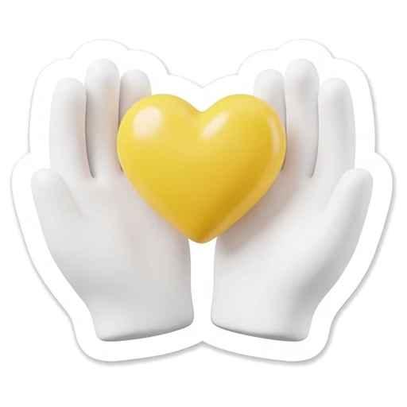

Поддержка, после которой клиент говорит «меня поняли»
Как специалисту Т-Банка вести сложное обращение: что заметить в данных, что спросить, что сделать самому и как показать клиенту, что его услышали

Ирина стоит на кассе, оплата не проходит. Сейчас она три дня ждёт, пишет дважды и решает держать деньги в другом банке. С нашим подходом специалист видит остановленную покупку до первого вопроса и снимает ограничение сам

Рутину уже закрывает ИИ. Остались сложные случаи
До 45% обращений Т-Банка решают ИИ и цифровые ассистенты. К специалисту приходят нестандартные ситуации, и как раз после них клиент пишет снова, жалуется или уходит
Мы разметили 53 отзыва о поддержке Т-Банка с banki.ru, otzovik, Сравни и других площадок. Регулятор видит то же самое: за 2025 год жалобы на банки в ЦБ выросли на 14,7%, на антифрод в 2,3 раза
Одинаковые слова значат разное, историю клиента никто не открыл
Испуганному человеку присылают инструкцию из пяти шагов
Нет срока, списка документов и запасного варианта
«Передано в отдел», сроки сдвигаются, историю приходится рассказывать заново
Тот же сбой у тысяч клиентов, и никто не передаёт его дальше
Пять типов ситуаций, которым нужен особый подход
Делим по тому, что нужно человеку прямо сейчас. Блокировка карты бывает и срочной, и страшной, поэтому продукт тут вторичен. Тип обычно понятен по первым 1-2 сообщениям и данным клиента

Срочно

Страшно

Несправедливо

Тяжело

Снова
Путь Ирины: три дня без карты и два обращения
Полная карта на 24 шага со Service Blueprint лежит на доске Miro. Здесь она собрана в 8 этапов. Хуже всего Ирине там, где банк знает причину, а ей не говорит
 Ирина, 32Маркетолог из Москвы, зарплатный клиент Т-Банка 4 года, всё решает в чате
Ирина, 32Маркетолог из Москвы, зарплатный клиент Т-Банка 4 года, всё решает в чатеДержать все деньги в одном банке опасноВечер пятницы, оплата на кассе не проходит: антифрод ограничил карту. Решилось только на третий день
Пять шагов специалиста в сложном обращении
Подход называется «Понял», потому что именно это клиент должен почувствовать в конце. Шаги мы взяли из разборов ситуаций и интервью, а потом сверили с тем, как работают Disney, Apple и британские банки с уязвимыми клиентами
Операции за сутки, ограничения, прошлые обращения. По ним уже видно тип ситуации
Не спрашиваю то, что банк уже знает
Показать, что понял, и снять с клиента вину
Правильно понимаю, вы на кассе и оплата не проходит?
Один-два вопроса, по одному. Лишний вопрос дешевле неверного ответа
Сейчас кто-то просит перевести деньги или назвать код?
Всё, что можно, специалист делает сам. Клиенту говорит, что сделано, что нужно от него и когда будет итог
Уже сделала. От вас нужно одно. Итог до 18:00
Вопрос остаётся за специалистом, пока проблема не решена. Причину, которая повторяется, он передаёт в продукт
Если что-то пойдёт не так, напишите сюда, я увижу
Прототип рабочего места специалиста
Выберите обращение слева. Справа подсказки: тип ситуации по данным, шаги, порог, до которого можно вернуть деньги без согласования, и карточка случая для клиента. Обращения придуманы по мотивам реальных отзывов
685 млн ₽ в год и окупаемость за 3,2 месяца
Модель построена на открытых данных: 17,8 млн сложных обращений к специалисту в год, 274 ₽ за обращение, 5 220 ₽ операционной прибыли с активного клиента в год. Дополнительное время специалистов и возвраты денег вычтены как расходы
Балл из 5. Веса: решение с первого обращения 25%, «меня поняли» 20%, удержание 15%, экономика 15%, риски 10%, реализуемость 10%, причины в продуктах 5%
Правила по пяти типам, формулировки для ограничений вместе с комплаенсом, порог возврата с финансами, первая версия подсказок
A/B с контрольной группой, 137 тыс. сложных обращений, бюджет 35 млн ₽
Сначала чаты, потом звонки и вторая линия. Обучение 4 часа
20 тыс. специалистов, каждый месяц топ причин для продуктовых команд
Все 7 подзадач кейса
Где найти ответ на каждую подзадачу. Дерево причин и сравнение вариантов лежат в приложениях 2 и 3 презентации
Т-Банк, Сбер, Альфа, ВТБ и Яндекс: что удобно, что разочаровало и какие 6 практик мы забираем
Слайд 25 типов по тому, что нужно человеку, как их узнать и чего нельзя делать
Слайд 35 действий и в скольких ситуациях каждое решило исход
Слайд 3CJM на 24 шага: где стресс, где равнодушие, где Ирина перестаёт доверять банку. Под картой Service Blueprint
Слайд 4Пять шагов, вопросы, инструменты, данные и принципы, плейбук по типам
Слайд 55 изменений под корневые причины, шаблон для смежных команд и расчёт, когда возврат денег выгоден банку
Слайд 6Как действие специалиста превращается в деньги: повторы, удержание, продукт. Варианты, план и метрики
Слайд 7CJM на 24 шага, Service Blueprint, персона, JTBD, исследование, дерево причин и варианты
Открыть доскуОткрыть с телефона
Команда